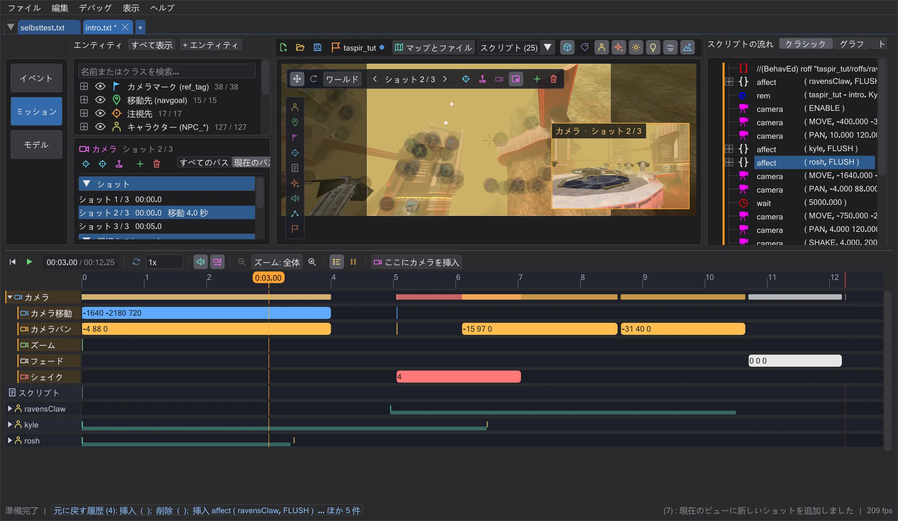
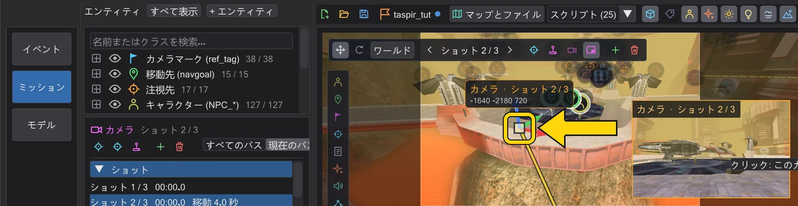
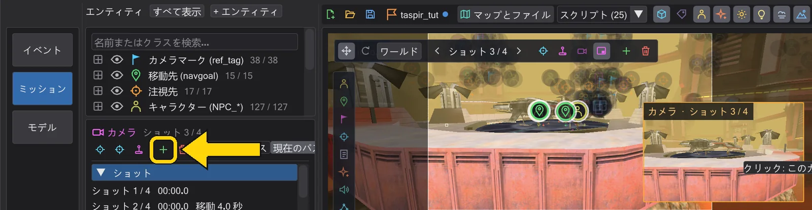
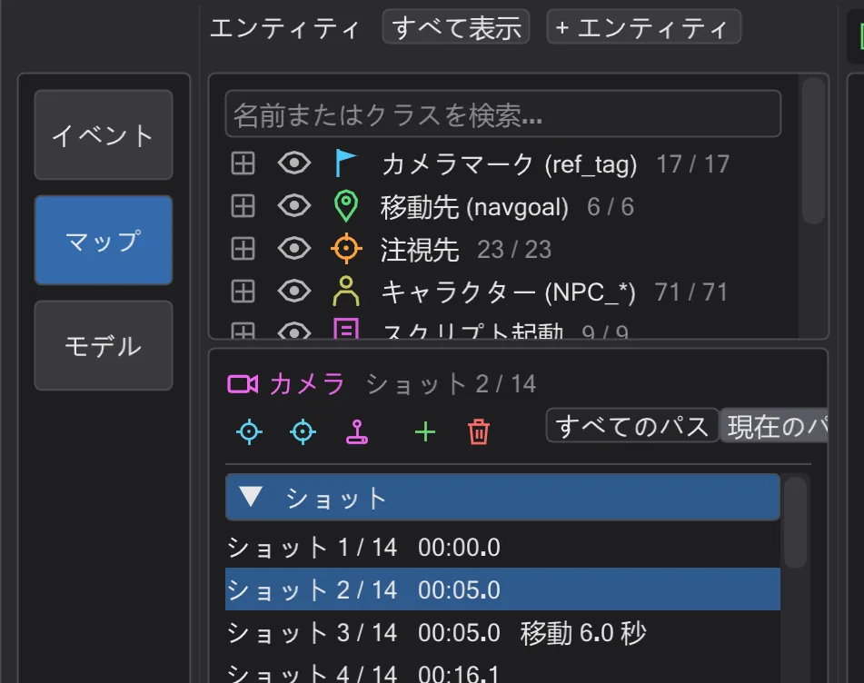
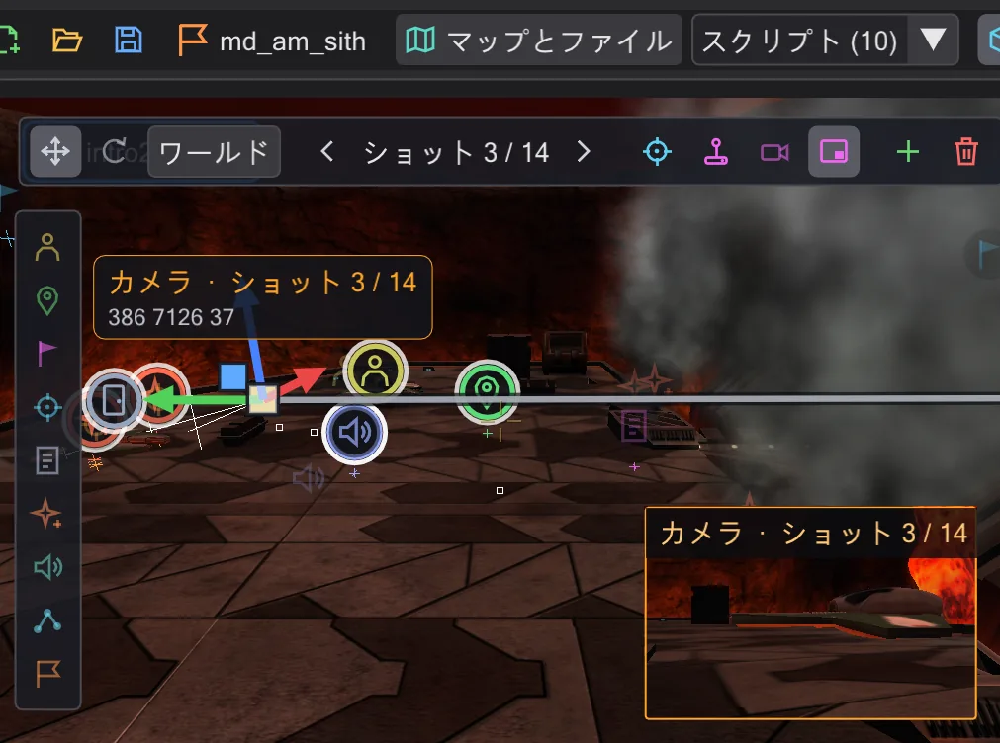
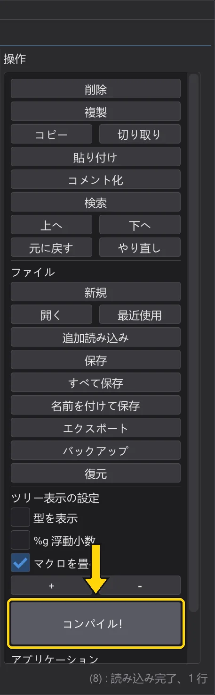

はじめてのカットシーン
2 つのカメラショットとその間のなめらかな移動を作り、カメラ視点で確認して、ゲーム用にコンパイルします。
手順#
- 1
ミッションを開く。 ファイル → ミッションを読み込む… で
MD_Missions_Ep3.pk3を選び、md_am_sithをクリックします。マップがミッションの全スクリプトのタブ付きで開くので、intro2_sithタブのままにします。
ミッションが開いた状態。 - 2
カメラを選ぶ。 マップのカメラ記号(またはタイムラインの カメラ 行)をクリックします。左にショット、マップにパスが表示されます。

カメラを選択した状態。 - 3
良い場所へ飛んでショットを追加する。 右ボタンを押したまま W A S D で飛び、気に入る視点を探します。ここに新しいショット を押すと、現在の視点の
camera ( MOVE )とcamera ( PAN )が選択中のショットの後ろに追加されます。
現在の視点に追加した新しいショット。 - 4
移動時間を付ける。 選択中のショット で 移動時間 を
3(秒)にします。カメラは前のショットから 3 秒かけて飛んできます。0ならカットです。
カメラパネルの移動時間。 - 5
確認する。 カメラプレビュー をオンにして小さな画像をクリックし、カメラ視点にしてから マップ下の再生ボタン(▶)を押します。タイムラインがゲームと同じようにシーンを再生します(サウンドがオンなら音付き)。

再生中にカメラ視点で見る。 - 6
保存してコンパイルする。
.pk3から開いたスクリプトにはまだファイルがないため、最初の保存で保存先を聞かれます。MOD のscriptsフォルダー(例MD\scripts\md_am\)を選びます。続いて コンパイル！ でゲームが実行する.ibiが隣に書き出されます。自分のミッションなら ミッションを保存 ですべてを.pk3にまとめます。自分のミッション を参照。
操作列。コンパイル！ はファイルのボタンの下にあり、成功すると緑に光ります。


次に#
2 つのショットの間でカメラのギズモをつかむとそこにキーを設定できます(ショットの移動と回転)。操縦 でショット全体を自分で飛ばすこともできます(ショットを自分で飛ばす(操縦))。